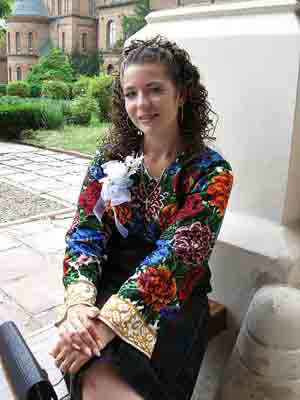

Збережемо наше майбутнє!
Краса врятує світ
Ф.М. Достоєвський
Збережемо наше майбутнє!
Краса врятує світ
Ф.М. Достоєвський

Слава нашого національно мистецтва виходить далеко за межі України та інших слов’янських країн. Справжня колоритна барвиста українська сорочка, зроблена з льону й вишита вручну, оздоблена національними орнаментами та виконана різноманітними техніками вишивання, втілює всю родючість української землі та щедрість і гостинність українського народу.
Вишивання сорочок з давніх давен органічно увійшло в життя народу, воно втілює в собі всі його естетичні принципи, ідеали добра та краси, прагнення до довершеного і витонченого.
Усім відомо, що вишивання є національним мистецтвом та ремеслом українців, звичайно, у залежності від регіону існують певні розбіжності у використанні елементів орнаментів, естетичності їх розташування, гами кольорів, а також у використанні певних технік.
Наш народ ставився до вишиванки як до святині. Вони передавалися з покоління в покоління, з роду в рід, береглися як реліквії. Символічний образ сорочки-вишиванки часто зустрічається в народних піснях. За традицією, дівчина, готуючи придане, мала власноруч вишити своєму нареченому сорочку.
Вишиванка — це символ здоров'я та краси, щасливої долі й родової пам'яті, порядності й чесності, любові та святковості; крім того, вишиванка – це ще й оберіг. Символіка вишивки залежала від того, кому призначалося вбрання: парубкові-нареченому, чоловікові чи хлопцеві; дівчині чи заміжній жінці.
Виготовлялися сорочки з лляного чи конопляного полотна домашньої роботи. Було чимало типів традиційних сорочок залежно від форми, використаних матеріалів, а також від семантики кольорів: подільський, галицький, поліський, волинський, наддніпрянський, полтавський, гуцульський, буковинський, лемківський тощо. Цікаво, що символіка вишиванок часто-густо збігається з символікою орнаментів предметів матеріальної трипільської культури. Виявлені на Черкащині срібні бляшки з фігурками чоловіків (датують їх VI ст.) ідентифікуються з візерунками вишиванок XVIII—XX ст. Щоправда, символіка вишивки часто складалася з двох частин: історичної (родової) і прогнозуючої (загадування майбутнього, продовження роду).

Історія народної вишивки в Україні йде коренями в сиву глибину століть. Дані археологічних розкопок і свідчення мандрівників і літописців підтверджують, що вишивання як вид мистецтва тут існує з незапам'ятних часів. Вишивкою, за свідченням Геродота, був прикрашений ще одяг скіфів. Знайдені на Черкащині срібні бляшки з фігурками чоловіків, датовані VІ ст., при дослідженні показали ідентичність не тільки з одягом, але і з вишивкою українського народного костюма XVІІІ-XІX ст. Арабський мандрівник X ст. у своїх розповідях про русів згадує, що вони мали вишитий одяг. На жаль, пам'ятки української вишивки збереглися тільки за останні кілька століть, але навіть цього досить, щоб з'ясувати, що елементи символіки орнаментів української вишивки збігаються з орнаментами, які прикрашали посуд давніх жителів території України періоду неоліту, трипільської культури.
Вишиванням споконвіку займались жінки, які з покоління впокоління передавали найтиповіші, найяскравіші зразки орнаменту, кольору, вишивальну техніку. Вишивки, передаючи характерні ознаки місцевості, різняться між собою орнаментом, технікою виконання та гамою барв.
Протягом багатьох віків безпосередній конкретний зміст символів на вишивках втрачався, але традиції використання їх не зникли. За мотивами орнаменти вишивок поділяються на три групи : геометричні, рослинні, зооморфні (тваринні) й відображають елементи символіки стародавніх вірувань, культів.
Геометричні орнаменти, наприклад, притаманні всім видам народного мистецтва і всій слов`янській міфології. Різноманітні кружальця, трикутники, ромби, кривульки, лінії, хрести символічно відображали уявлення нашіх предків про світобудову, тож їхнє значення відповідне. На основі стародавніх космологічних символфів у народі створенна своя система назв. Це «баранячі ноги», «кучері», «гребінчики», «кривульки», «сосонка», «перерва» тощо.
В основі рослинного орнаменту лежить культ пок-лоніння природі, рослині. Крім поширеного символу «дерево життя», який зображається стилізовано у формі листя або гілок,у вишивках з рослинним орнаментом популярні стилізовані зображення Берегині, використання таких мотивів, як «виноград» - символ добробуту, щасливого одруження, «барвінок» - символ кохання тощо.
На зооморфних вишивках зображуються тотемічні й солярні тварини, а також звірі, що позначають три яруси «дерева життя». Інколи вишивальниці використовують індивідуальні мотиви, які властиві баченню візерунка певної особи. Ними можуть бути заячі та вовчі зуби, волове око, риб`яча луска тощо.
Полтавські вишивки виконуються хрестиком, плутаним хрестиком, подвійним прутиком, зубчиками, мережкою, ланцюжком тощо. Візерунки виконуються окремими швами і поєднанням кількох швів. Вишивають переважно білими нитками, зрідка - червоними та сірими, візерунок обводять чорними або кольоровими смугами.
Вишивкам Київщини властивий рослинно-геометричний орнамент із стилізованими гронами винограду, цвітом хмелю, ромбами, квадратами. Основні кольори білий, коралово-червоний, трапляється жовтий і голубий. Виконується вишивка хрестиком, знизуванням, гладдю.
Для вишивок Закарпаття характерний мотив «кривуля» у різних техніках виконання. Переважає техніка «заволікання» і вишивання хрестиком, часто використовується вирізування та гаптування. Кольорова гама вишивок широка червоне поєднується з чорним, при цьому виділяється один з кольорів ; поширені як білі, так і багатокольорові орнаменти.
Вишивкою оздоблювали рушники, фіранки, жіночий та чоловічий одяг. Особливої уваги надавали рушникам - старовинним оберегам дому, родини. У давнину рушник, вишитий відповідними візерункамисимволами, був неодмінним атрибутом багатьох обрядів : з рушником приходили до породіллі вшанувати появу нової людини, зустрічали, і проводжали дорогих гостей, справляли шлюбні обряди, проводжали в останню путь, прикрашали, образи та накривали хліб на столі. Крім обрядового значення, рушники мали і чисто практичне застосування. Відповідно до функцій,які вони виконували, рушники мали свої назви. Наприклад, для втирання обличчя і рук - утирач, посуду і стола - стирок, для прикрашення образів - покутник, для шлюбних церемоній - весільний, для похорон - поховальний, для пов`язування сватів - плечовий тощо. Рушники були своєрідною освятою по-чатку справи чи її закінчення, так, при зведенні хати рушниками застелялися підвалини, хлібом-сіллю на рушнику освячувався початок жнив, на рушниках опускалась домовина з небіжчиком, рушниками скріплювали купівлю-продаж тощо. Відповідно до призначення рушники розрізнялись за технікою виготовлення та вишивання. Кольори та орнамент рушників характерні регіональним особливостям, за якими розрізняються «подільські», «поліські», «київські», «гуцульські», «галицькі» і «буковинські».
Українська вишивка, рушники на перший погляд не мають ніякого значення в житті сучасної людини, але вони віють на серце кожного з нас чаром рідної стихії і є живущим бальзамом, який сповнює нас споконвічною могутньою силою українського народу.
Вишивка - класичний вид українського народного мистецтва, що розкриває невичерпне багатство творчих сил народу, вершини його мистецького хисту.
У процесі історичного та культурного розвитку на Україні у кожній місцевості утворились характерні орнаментальні мотиви і композиції, найбільш улюблена і поширена колірна гама, специфічні техніки виконання. Дбайливо передавалися вони з покоління в покоління, майстри відшліфовували кращі досягнення своїх попередників, розвиваючи і вдосконалюючи їх. Вишивкою займалися повсюди. Кожний район, навіть кожне село відзначалися своєрідністю мотивів. У розповсюджених орнаментальних мотивах, їх назвах вражає образна спостережливість, тонке поетичне почуття. Це "барвінок", "хмелик", "курячий брід", "зозулька", "гарбузове листя" та ін. Ось тому вишивка - це не тільки художнє оформлення речей, а й своєрідне світобачення відтворене специфічними художніми засобами.
В українській вишивці органічно співіснують рослинний і геометричний орнаменти. Геометричні мотиви, такі, як ромб, розетки, хрестоподібні фігури, стали основою східнослов'янського узору.
Найпоширенішим є мотив ромба, який набуває різноманітних окреслень. Ускладнюється не тільки внутрішній простір, а й зовнішній контур. Ромб - один з найпопулярніших мотивів вишивки Волині, Поділля, Гуцульщини. У вишивці у відповідності із застосованою технікою він дає різноманітний художній ефект.
У ХІХ ст. підвищення інтересу до рослинної орнаментації сприяють витісненню стародавніх композицій, новому їх переосмисленню. Велике художнє значення мали лінії крою, що їх майстрині не намагалися приховати, а навпаки, виявити за допомогою ажурних швів. Принцип поєднання ажурних швів типовий для всіх районів України, однак колористичне і технічне рішення різне в кожній місцевості.
У Київському і Чернігівському Поліссі поряд з геометричними популярне рослинно-геометричні мотиви в чорно-синій гамі. Улюбленими тут є "рожі", "берізки", "хміль", "барвінок", а також "гусячі лапки", "сливки".
На грані ХІХ-ХХ ст. відбувається кардинальна зміна художньо-образного вирішення народної вишивки. Пояснюється це поширенням техніки хрестика. Цією технікою вишивали в містах та панських маєтках, різноманітні предмети інтер'єрного призначення: панно, скатерки, серветки.
Класичною технікою Поділля є низь чорного і червоного кольорів, які мають стиль "лягання" густими насиченими лініями на полотно. Ця техніка виконується з вивороту, а на лиці, як на негативі має протилежний вигляд щодо розміщення кольорів.
Високим художньо-технічним рівнем виконання вирізняється вишивка багатонаціонального Закарпаття. Вони демонструють, як широту етнокультурних взаємовпливів, так і збереження традицій сивої давнини. Цей регіон відзначається різноманітністю технік виконання і колірної гами, застосуванням бісеру, стелярусу.
Особливу групу утворюють вироби Гуцульщини. Гуцульщина - історично-етнографічний край, що охоплює гірські райони Івано-Франківської та Чернівецької областей, та Рухівський район Закарпатської області.
Кожний район, навіть кожне село має своє художнє обличчя, улюблену колірну гаму. Так, у Яворові були "сливові", "черешневі", "соснові" мотиви, а найулюбленішими узорами залишалися "скриньковий" у вигляді ромбів або зигзагів, утворений прямокутними "скриньками", або ж малюнок "головкатий". Колорит ворівських вишивок червоний, який підсилено жовтим, зеленим та червоним. Поступово гама змінюється у бік багато барвистості, в ній переважають голубі, зелені, сині кольори, а у брусторівській - зелені, чорні.
Місцевою своєрідністю відзначаються вишивки гірського села Космач. Характерною прикметою є те, що вишивка виконується дрібним хрестиком, стібками, що утворюється завдяки гармонійному поєднанню ясних тонів - жовтого, оранжевого, темно-червоного кольорів, з незначним додаванням зеленого та чорного.
* Вишивка хрестиком є найпопулірнішим швом, який застосовують у найрізноманітніших виробах. Наприкінці 19 століття така вишивка поширилася по всій Україні. Елементи орнаменту, які виконувалися хрестиком, найчастіше мали рослинний чи геометричний характер.
* Сорочка (особливо ж чоловіча) - символ кохання й вірності. У давньому замовлянні сказано: «Якою білою є сорочка на тілі, таким щоб і чоловік до жінки був. У деяких народних піснях, як зауважив О.Потебня, образ не пояснюється, але його можна зрозуміти на основі символічних значень.
* У другій половині XIX ст. в європейській фольклористиці широко обговорювали сюжет про графа, який потрапив у полон до невірних, і про його дружину. Біла сорочка, дана дружиною чоловікові, — символ вірності: поки сорочка біла, доти жінка вірна. Випрати сорочку в чумацьких піснях означає полюбити чумака, навіть якщо він одружений. Характерно, що не завжди чумак погоджується на любовні стосунки з випадковими особами жіночої статі (в піснях це переважно дівчата або молода шинкарка-здирниця), не дозволяє їм «прати сорочку», хоч вона й не біла, бо «сьома неділя». Таким чином, чумак зберігає вірність коханій дівчині, до якої має повернутися.
* Вишивка "білим по білому" - це художній прийом, у якому рельєфний узор вишивки створює гру світла, то вбираючи, то відбиваючи його; поєднуються до десяти технік вишивки, а їх різноманітне сполучення дають безліч вишуканих орнаментальних композицій; філігранна краса узорів досягається використанням наскрізних технік вишивки. Вдивляючись у такі узори, відчуваєш все зовсім по іншому - плин часу, мить зупиняється, душа відпочиває й тільки диву дивуєшся, як можна створювати таку тонку роботу...